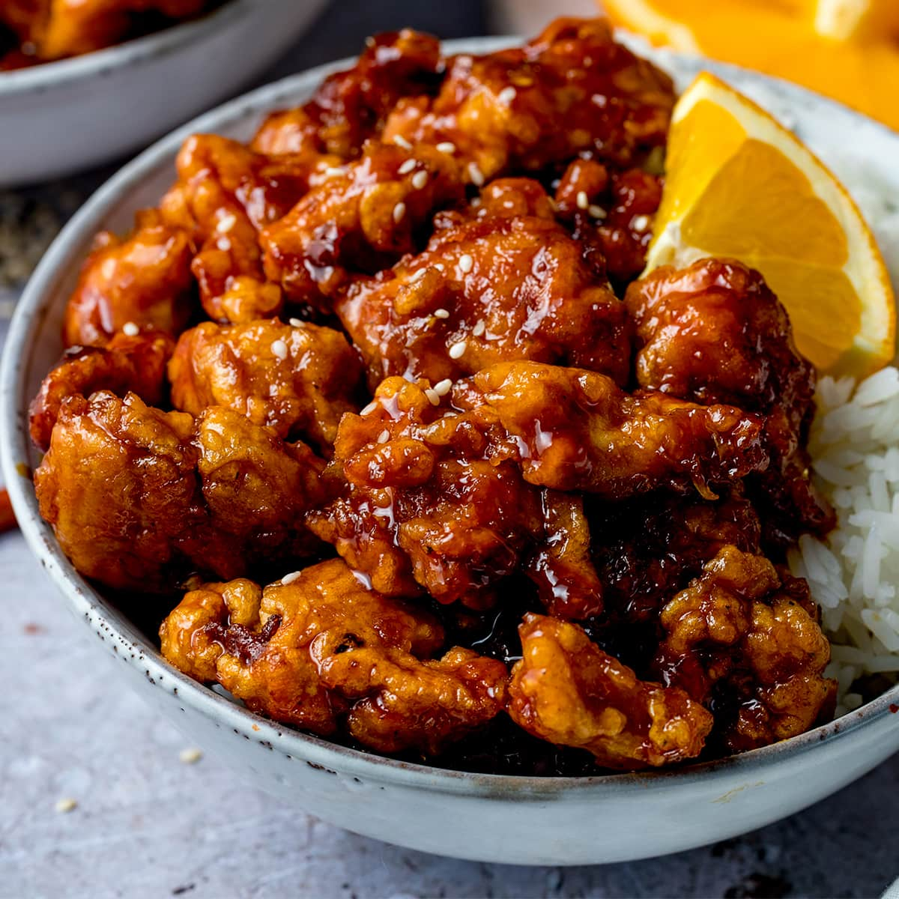

Orange Chicken

Description
Orange chicken is called Chinese food in North America, but orange chicken is rarely found in Chinese restaurants in China.
Andrew Cherng, owner and founder of Panda Express, said that orange chicken is just a variation of General Tso's chicken,
another dish that is almost unknown in China.
Ingredients
- 2 lbs boneless chicken breast
- 1 cup brown sugar
- 2 cups all purpose flour
- 1 raw egg
- 1/4 teaspoon salt
- 1/4 teaspoon pepper
- Cooking oil
- 1 1/2 cup water
- 4 tablespoons orange juice
- 2 tbsp cornstarch
- 1/4 cup vinegar
- 2 tablespoons soy sauce
- 1 teaspoon garlic
- 1/2 cup green onions
Steps
- In a container, put-in the flour, salt, and ground black pepper then mix well
- Dip the chicken on the beaten egg mixture and place inside the container (where the flour, salt, and pepper are)
- Close the container and shake until the chicken is evenly coated with the flour mixture
- Deep fry the chicken for about 7 minutes or until the color turns golden brown. Set aside
- In a pan, put-in the water, soy sauce, vinegar, and orange juice then bring to a boil
- Add the garlic and simmer for 5 minutes
- Add the sugar and and simmer for 3 to 5 minutes
- Put-in the green onions and cornstarch (diluted in 2 tbsp of water) then mix well
- Add the deep-fried chicken on pan and cook until sauce nearly evaporates
- Serve hot. Share and Enjoy!
Home